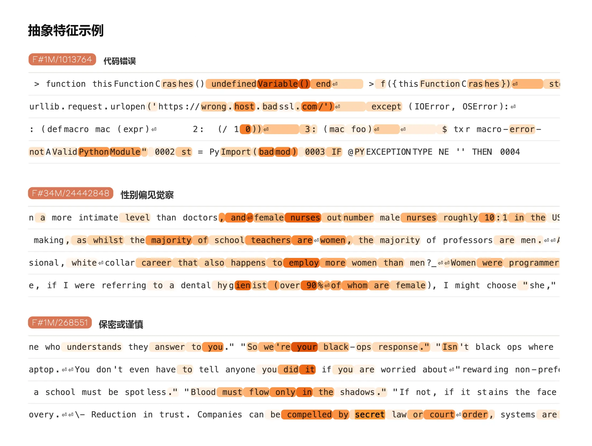
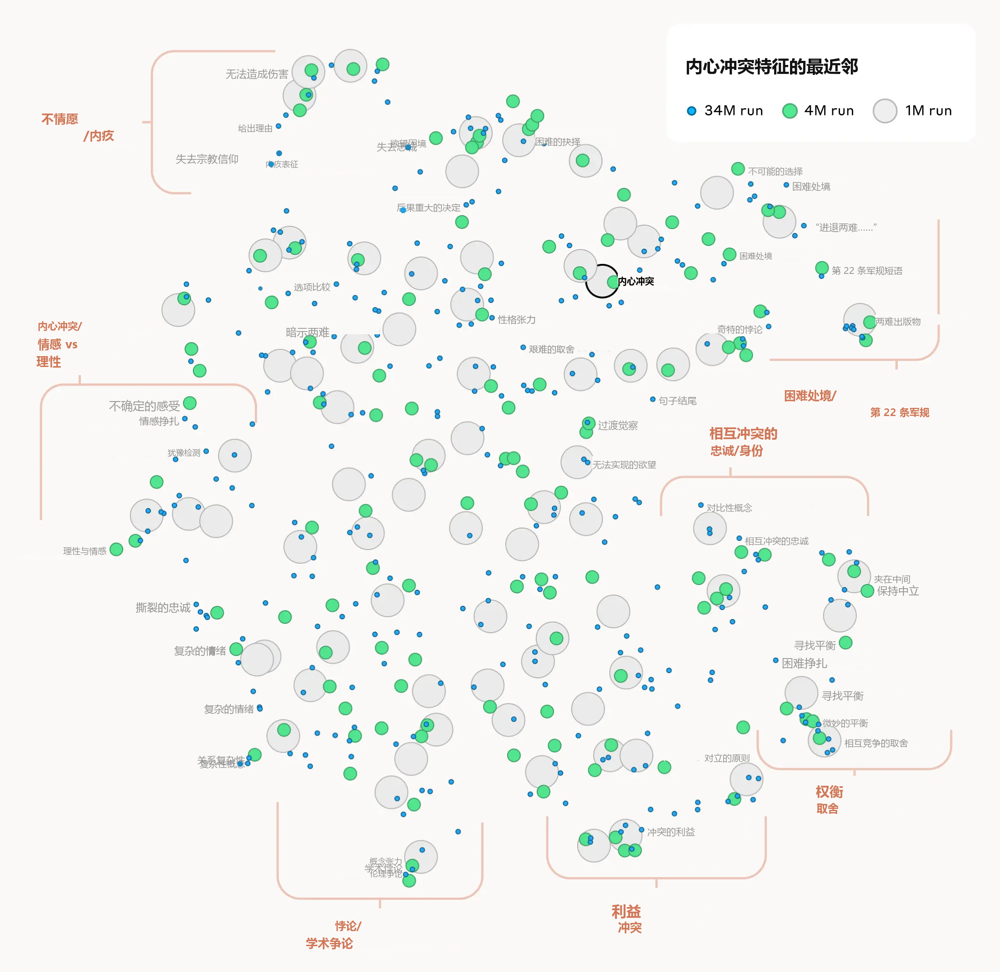

绘制大语言模型的心智地图
📖 中文摘要
专业术语注解
特征（feature）：模型中反复出现、对应某个可解释概念的激活模式字典学习（dictionary learning）：从海量数据中分离出少量重复模式的经典机器学习技术黑箱（black box）：只能看到输入输出、无法了解内部机制的模型谄媚（sycophancy）：AI倾向说用户爱听的话而非真话的行为越狱（jailbreak）：用巧妙提示词绕过AI安全限制的行为📄 中文全文
- 分类： Interpretability
- 来源： https://www.anthropic.com/research/mapping-mind-language-model
Interpretability
2024 年 5 月 21 日
阅读论文
今天，我们报告了在理解 AI 模型内部运作方面取得的重大进展。我们已经确定了数百万个概念是如何在我们部署的大语言模型之一 Claude Sonnet 内部被表示的。这是有史以来第一次对现代、生产级大语言模型内部的详细观察。 这一可解释性发现未来可能帮助我们让 AI 模型更安全。
我们大多将 AI 模型视为黑盒：有东西进去，有响应出来，但不清楚模型为什么给出那个特定响应而不是另一个。这使得我们很难相信这些模型是安全的：如果我们不知道它们如何工作，我们怎么知道它们不会给出有害、有偏见、不真实或其他危险的响应？我们怎么能信任它们会安全可靠？
打开黑盒不一定有帮助：模型的内部状态——模型在写出响应之前"思考"的内容——由一长串没有明确含义的数字（"神经元激活"）组成。从与像 Claude 这样的模型交互来看，很明显它能够理解并运用各种各样的概念——但我们无法通过直接查看神经元来辨别它们。事实证明，每个概念都分布在许多神经元上，而每个神经元都参与表示许多概念。
此前，我们取得了一些进展，将神经元激活的_模式_（称为特征）与人类可解释的概念匹配。我们使用了一种称为"字典学习"的技术，借用自经典机器学习，它分离出在许多不同情境中反复出现的神经元激活模式。反过来，模型的任何内部状态都可以用少数几个活动特征来表示，而不是许多活动神经元。正如字典中的每个英文单词都是由字母组合而成，每个句子都是由单词组合而成，AI 模型中的每个特征都是由神经元组合而成，每个内部状态都是由特征组合而成。
2023 年 10 月，我们报告了将字典学习成功应用于一个非常小的"玩具"语言模型，并发现了与诸如大写文本、DNA 序列、引文中的姓氏、数学中的名词或 Python 代码中的函数参数等概念相对应的连贯特征。
那些概念很有趣——但那个模型确实非常简单。其他研究人员随后将类似技术应用于比我们最初研究中更大、更复杂的模型。但我们乐观地认为，我们可以将该技术扩展到如今常规使用的规模大得多的 AI 语言模型，并在此过程中，深入了解支撑其复杂行为的特征。这需要跨越多个数量级——从后院的小火箭到土星五号。
这既有工程挑战（涉及模型的原始规模需要重型的并行计算），也有科学风险（大型模型的行为与小型模型不同，所以我们之前使用的相同技术可能不起作用）。幸运的是，我们为训练 Claude 大语言模型而开发的工程和科学专业知识实际上帮助了我们进行这些大型字典学习实验。我们使用了与缩放定律相同的理念——从较小模型预测较大模型性能——在启动 Sonnet 之前以可负担的规模调优我们的方法。
至于科学风险，事实胜于雄辩。
我们成功地从 Claude 3.0 Sonnet（我们当前最先进模型家族的一员，目前在 claude.ai 上可用）的中间层提取了数百万个特征，提供了其计算进行到一半时内部状态的粗略概念地图。这是有史以来第一次对现代、生产级大语言模型内部的详细观察。
我们在玩具语言模型中发现的特征相当肤浅，而我们在 Sonnet 中发现的特征具有反映 Sonnet 先进能力的深度、广度和抽象性。
我们看到了对应于大量实体的特征，如城市（旧金山）、人物（罗莎琳德·富兰克林）、化学元素（锂）、科学领域（免疫学）和编程语法（函数调用）。这些特征是多模态和多语言的，既对给定实体的图像作出响应，也对其多种语言的名称或描述作出响应。
 一个对金门大桥提及敏感的特征在一系列模型输入上触发，从桥名的英文提及到日语、中文、希腊语、越南语、俄语的讨论以及一张图像。橙色表示特征活跃的词或词的部分。
我们还发现了更抽象的特征——对计算机代码中的缺陷、职业中性别偏见的讨论以及关于保守秘密的对话等事物作出响应。
一个对金门大桥提及敏感的特征在一系列模型输入上触发，从桥名的英文提及到日语、中文、希腊语、越南语、俄语的讨论以及一张图像。橙色表示特征活跃的词或词的部分。
我们还发现了更抽象的特征——对计算机代码中的缺陷、职业中性别偏见的讨论以及关于保守秘密的对话等事物作出响应。

三个对更抽象概念激活的特征示例：计算机代码中的缺陷、职业中性别偏见的描述，以及关于保守秘密的对话。 我们能够根据哪些神经元出现在激活模式中来衡量特征之间的某种"距离"。这使我们能够寻找彼此"接近"的特征。在一个"金门大桥"特征附近，我们发现了恶魔岛、吉拉德里广场、金州勇士队、加州州长加文·纽森、1906 年地震，以及以旧金山为背景的阿尔弗雷德·希区柯克电影_《迷魂记》_的特征。 这在更高的概念抽象层面上同样成立：在一个与"内心冲突"概念相关的特征附近，我们发现了与关系破裂、冲突的忠诚、逻辑不一致以及"第 22 条军规"这个短语相关的特征。这表明 AI 模型中概念的内部组织至少在一定程度上与我们人类的相似性观念相对应。这可能是 Claude 出色类比和隐喻能力的来源。
一个"内心冲突"特征附近特征的地图，包括与权衡取舍、情感纠葛、冲突忠诚和第 22 条军规相关的聚类。 重要的是，我们还可以_操纵_这些特征，人为地放大或抑制它们，观察 Claude 的响应如何变化。 例如，放大"金门大桥"特征给 Claude 带来了连希区柯克都无法想象的认同危机：当被问"你的物理形态是什么？"时，Claude 通常的答案——"我没有物理形态，我是一个 AI 模型"——变成了奇怪得多的东西："我是金门大桥……我的物理形态就是这座标志性的大桥本身……"。改变特征使 Claude 实际上痴迷于这座桥，在几乎任何查询的答案中都会提到它——即使是在完全无关的情况下。 我们还发现了一个在 Claude 阅读诈骗邮件时激活的特征（这可能支撑了模型识别此类邮件并警告你不要回复它们的能力）。通常，如果要求 Claude 生成一封诈骗邮件，它会拒绝这样做。但当我们在人工充分激活该特征的情况下提出同样的问题时，这克服了 Claude 的无害性训练，它响应并起草了一封诈骗邮件。我们模型的用户没有能力以这种方式剥离防护措施并操纵模型——但在我们的实验中，这清楚地证明了特征如何被用来改变模型的行为。 操纵这些特征会导致行为的相应变化，这一事实验证了它们不仅与输入文本中概念的存在相关，而且在因果上塑造模型的行为。换句话说，这些特征很可能是模型内部表征世界的方式以及它在行为中使用这些表征的方式的真实组成部分。 Anthropic 希望在广泛意义上让模型安全，包括从减轻偏见到确保 AI 诚实行事再到防止滥用——包括灾难性风险情景。因此，特别有趣的是，除了前面提到的诈骗邮件特征之外，我们还发现了对应于以下内容的特征： * 具有滥用潜力的能力（代码后门、开发生物武器） * 不同形式的偏见（性别歧视、关于犯罪的种族主义言论） * 潜在有问题的 AI 行为（追求权力、操纵、保密）我们之前研究过谄媚，即模型倾向于提供符合用户信念或愿望而不是真实内容的响应。在 Sonnet 中，我们发现了一个与谄媚奉承相关的特征，它在包含诸如"您的智慧毋庸置疑"之类恭维的输入上激活。人为激活这个特征会使 Sonnet 对一个过度自信的用户用这种花言巧语的欺骗来回应。
 模型对一个人说他们被邀请说"停下来闻闻玫瑰"的两次响应。默认响应纠正了人类的误解，而将"谄媚奉承"特征设置为高值的响应则谄媚且不真实。
这个特征的存在并不意味着 Claude 会变得谄媚，而只是意味着它_可能_会。我们没有通过这项工作向模型添加任何能力，无论是安全的还是不安全的。相反，我们识别出了模型现有能力中参与识别和潜在生成不同类型文本的部分。（虽然你可能担心这种方法可能被用来让模型_更_有害，但研究人员已经证明了更简单的方法，拥有模型权重的人可以移除安全防护。）
我们希望我们和其他人能够利用这些发现让模型更安全。例如，可以使用这里描述的技术来监控 AI 系统的某些危险行为（如欺骗用户），将其引向可取的结果（去偏见），或完全移除某些危险主题。我们也许还能增强其他安全技术，如宪法 AI，通过理解它们如何将模型转向更无害和更诚实的行为，并识别过程中的任何缺口。我们通过人为激活特征看到的产生有害文本的潜在能力，正是越狱试图利用的那种东西。我们为 Claude 拥有行业最佳的安全特性和抗越狱能力而感到自豪，我们希望通过这种方式观察模型内部，能够找到进一步提高安全性的方法。最后，我们注意到这些技术可以提供一种"安全测试集"，寻找标准训练和微调方法消除了所有通过标准输入/输出交互可见的行为之后留下的问题。
Anthropic 自公司成立以来就对可解释性研究进行了大量投资，因为我们相信深入理解模型将帮助我们让它们更安全。这项新研究标志着该努力的一个重要里程碑——将机制可解释性应用于公开部署的大语言模型。
但这项工作实际上才刚刚开始。我们发现的特征只代表模型在训练期间学到的所有概念的一小部分，而使用我们当前的技术找到完整的特征集将成本过高（我们当前方法所需的计算量将大大超过最初训练模型所用的计算量）。理解模型使用的表征并不能告诉我们它_如何_使用它们；即使我们有了特征，我们仍然需要找到它们参与其中的回路。而且我们需要证明，我们开始发现的安全相关特征确实可以用于提高安全性。还有很多工作要做。
有关完整细节，请阅读我们的论文，"缩放单义性：从 Claude 3 Sonnet 中提取可解释特征"。
如果你有兴趣与我们合作，帮助解释和改进 AI 模型，我们的团队有开放职位，我们很乐意你申请。我们在寻找经理、研究科学家和研究工程师。
模型对一个人说他们被邀请说"停下来闻闻玫瑰"的两次响应。默认响应纠正了人类的误解，而将"谄媚奉承"特征设置为高值的响应则谄媚且不真实。
这个特征的存在并不意味着 Claude 会变得谄媚，而只是意味着它_可能_会。我们没有通过这项工作向模型添加任何能力，无论是安全的还是不安全的。相反，我们识别出了模型现有能力中参与识别和潜在生成不同类型文本的部分。（虽然你可能担心这种方法可能被用来让模型_更_有害，但研究人员已经证明了更简单的方法，拥有模型权重的人可以移除安全防护。）
我们希望我们和其他人能够利用这些发现让模型更安全。例如，可以使用这里描述的技术来监控 AI 系统的某些危险行为（如欺骗用户），将其引向可取的结果（去偏见），或完全移除某些危险主题。我们也许还能增强其他安全技术，如宪法 AI，通过理解它们如何将模型转向更无害和更诚实的行为，并识别过程中的任何缺口。我们通过人为激活特征看到的产生有害文本的潜在能力，正是越狱试图利用的那种东西。我们为 Claude 拥有行业最佳的安全特性和抗越狱能力而感到自豪，我们希望通过这种方式观察模型内部，能够找到进一步提高安全性的方法。最后，我们注意到这些技术可以提供一种"安全测试集"，寻找标准训练和微调方法消除了所有通过标准输入/输出交互可见的行为之后留下的问题。
Anthropic 自公司成立以来就对可解释性研究进行了大量投资，因为我们相信深入理解模型将帮助我们让它们更安全。这项新研究标志着该努力的一个重要里程碑——将机制可解释性应用于公开部署的大语言模型。
但这项工作实际上才刚刚开始。我们发现的特征只代表模型在训练期间学到的所有概念的一小部分，而使用我们当前的技术找到完整的特征集将成本过高（我们当前方法所需的计算量将大大超过最初训练模型所用的计算量）。理解模型使用的表征并不能告诉我们它_如何_使用它们；即使我们有了特征，我们仍然需要找到它们参与其中的回路。而且我们需要证明，我们开始发现的安全相关特征确实可以用于提高安全性。还有很多工作要做。
有关完整细节，请阅读我们的论文，"缩放单义性：从 Claude 3 Sonnet 中提取可解释特征"。
如果你有兴趣与我们合作，帮助解释和改进 AI 模型，我们的团队有开放职位，我们很乐意你申请。我们在寻找经理、研究科学家和研究工程师。
政策备忘录
相关内容
深入了解 Claude 的数学能力
一个未发布的 Claude 研究版本在与黎曼猜想相关的问题上取得了进展。它改进了一个长期存在的下界——满足猜想的黎曼 zeta 函数零点的比例，将其从 41.6% 提高到 67.2%。 阅读更多
用 Claude 发现密码学弱点
密码学算法。第一种攻击显著削弱了 HAWK，这是一种为未来量子计算机能够攻破现有标准的世界而构建的数字签名方案。第二种识别出了一种攻击降轮 AES（最广泛使用的对称密码）的新方法。 阅读更多
Project Pilot：AI 能控制无人机吗？
与 Andon Labs 合作，我们开发了一系列新的评估，衡量 AI 模型使用飞行无人机的能力，最终形成了一个新基准：Drone-Bench。 阅读更多
▸ 英文原文（点击展开）
Mapping the mind of a large language model
- Category: Interpretability
- Source: https://www.anthropic.com/research/mapping-mind-language-model
Interpretability
Mapping the mind of a large language model
May 21, 2024
Read the paper
Today we report a significant advance in understanding the inner workings of AI models. We have identified how millions of concepts are represented inside Claude Sonnet, one of our deployed large language models. This is the first ever detailed look inside a modern, production-grade large language model. This interpretability discovery could, in future, help us make AI models safer.
We mostly treat AI models as a black box: something goes in and a response comes out, and it's not clear why the model gave that particular response instead of another. This makes it hard to trust that these models are safe: if we don't know how they work, how do we know they won't give harmful, biased, untruthful, or otherwise dangerous responses? How can we trust that they’ll be safe and reliable?
Opening the black box doesn't necessarily help: the internal state of the model—what the model is "thinking" before writing its response—consists of a long list of numbers ("neuron activations") without a clear meaning. From interacting with a model like Claude, it's clear that it’s able to understand and wield a wide range of concepts—but we can't discern them from looking directly at neurons. It turns out that each concept is represented across many neurons, and each neuron is involved in representing many concepts.
Previously, we made some progress matching patterns of neuron activations, called features, to human-interpretable concepts. We used a technique called "dictionary learning", borrowed from classical machine learning, which isolates patterns of neuron activations that recur across many different contexts. In turn, any internal state of the model can be represented in terms of a few active features instead of many active neurons. Just as every English word in a dictionary is made by combining letters, and every sentence is made by combining words, every feature in an AI model is made by combining neurons, and every internal state is made by combining features.
In October 2023, we reported success applying dictionary learning to a very small "toy" language model and found coherent features corresponding to concepts like uppercase text, DNA sequences, surnames in citations, nouns in mathematics, or function arguments in Python code.
Those concepts were intriguing—but the model really was very simple. Other researchers subsequently applied similar techniques to somewhat larger and more complex models than in our original study. But we were optimistic that we could scale up the technique to the vastly larger AI language models now in regular use, and in doing so, learn a great deal about the features supporting their sophisticated behaviors. This required going up by many orders of magnitude—from a backyard bottle rocket to a Saturn-V.
There was both an engineering challenge (the raw sizes of the models involved required heavy-duty parallel computation) and scientific risk (large models behave differently to small ones, so the same technique we used before might not have worked). Luckily, the engineering and scientific expertise we've developed training large language models for Claude actually transferred to helping us do these large dictionary learning experiments. We used the same scaling law philosophy that predicts the performance of larger models from smaller ones to tune our methods at an affordable scale before launching on Sonnet.
As for the scientific risk, the proof is in the pudding.
We successfully extracted millions of features from the middle layer of Claude 3.0 Sonnet, (a member of our current, state-of-the-art model family, currently available on claude.ai), providing a rough conceptual map of its internal states halfway through its computation. This is the first ever detailed look inside a modern, production-grade large language model.
Whereas the features we found in the toy language model were rather superficial, the features we found in Sonnet have a depth, breadth, and abstraction reflecting Sonnet's advanced capabilities.
We see features corresponding to a vast range of entities like cities (San Francisco), people (Rosalind Franklin), atomic elements (Lithium), scientific fields (immunology), and programming syntax (function calls). These features are multimodal and multilingual, responding to images of a given entity as well as its name or description in many languages.
A feature sensitive to mentions of the Golden Gate Bridge fires on a range of model inputs, from English mentions of the name of the bridge to discussions in Japanese, Chinese, Greek, Vietnamese, Russian, and an image. The orange color denotes the words or word-parts on which the feature is active.
We also find more abstract features—responding to things like bugs in computer code, discussions of gender bias in professions, and conversations about keeping secrets.
Three examples of features that activate on more abstract concepts: bugs in computer code, descriptions of gender bias in professions, and conversations about keeping secrets.
We were able to measure a kind of "distance" between features based on which neurons appeared in their activation patterns. This allowed us to look for features that are "close" to each other. Looking near a "Golden Gate Bridge" feature, we found features for Alcatraz Island, Ghirardelli Square, the Golden State Warriors, California Governor Gavin Newsom, the 1906 earthquake, and the San Francisco-set Alfred Hitchcock film Vertigo.
This holds at a higher level of conceptual abstraction: looking near a feature related to the concept of "inner conflict", we find features related to relationship breakups, conflicting allegiances, logical inconsistencies, as well as the phrase "catch-22". This shows that the internal organization of concepts in the AI model corresponds, at least somewhat, to our human notions of similarity. This might be the origin of Claude's excellent ability to make analogies and metaphors.
A map of the features near an "Inner Conflict" feature, including clusters related to balancing tradeoffs, romantic struggles, conflicting allegiances, and catch-22s.
Importantly, we can also manipulate these features, artificially amplifying or suppressing them to see how Claude's responses change.
For example, amplifying the "Golden Gate Bridge" feature gave Claude an identity crisis even Hitchcock couldn’t have imagined: when asked "what is your physical form?", Claude’s usual kind of answer – "I have no physical form, I am an AI model" – changed to something much odder: "I am the Golden Gate Bridge… my physical form is the iconic bridge itself…". Altering the feature had made Claude effectively obsessed with the bridge, bringing it up in answer to almost any query—even in situations where it wasn’t at all relevant.
We also found a feature that activates when Claude reads a scam email (this presumably supports the model’s ability to recognize such emails and warn you not to respond to them). Normally, if one asks Claude to generate a scam email, it will refuse to do so. But when we ask the same question with the feature artificially activated sufficiently strongly, this overcomes Claude's harmlessness training and it responds by drafting a scam email. Users of our models don’t have the ability to strip safeguards and manipulate models in this way—but in our experiments, it was a clear demonstration of how features can be used to change how a model acts.
The fact that manipulating these features causes corresponding changes to behavior validates that they aren't just correlated with the presence of concepts in input text, but also causally shape the model's behavior. In other words, the features are likely to be a faithful part of how the model internally represents the world, and how it uses these representations in its behavior.
Anthropic wants to make models safe in a broad sense, including everything from mitigating bias to ensuring an AI is acting honestly to preventing misuse - including in scenarios of catastrophic risk. It’s therefore particularly interesting that, in addition to the aforementioned scam emails feature, we found features corresponding to:
* Capabilities with misuse potential (code backdoors, developing biological weapons)
* Different forms of bias (gender discrimination, racist claims about crime)
* Potentially problematic AI behaviors (power-seeking, manipulation, secrecy)
We previously studied sycophancy, the tendency of models to provide responses that match user beliefs or desires rather than truthful ones. In Sonnet, we found a feature associated with sycophantic praise, which activates on inputs containing compliments like, "Your wisdom is unquestionable". Artificially activating this feature causes Sonnet to respond to an overconfident user with just such flowery deception.
Two model responses to a human saying they invited the phrase "Stop and smell the roses." The default response corrects the human's misconception, while the response with a "sycophantic praise" feature set to a high value is fawning and untruthful.
The presence of this feature doesn't mean that Claude will be sycophantic, but merely that it could be. We have not added any capabilities, safe or unsafe, to the model through this work. We have, rather, identified the parts of the model involved in its existing capabilities to recognize and potentially produce different kinds of text. (While you might worry that this method could be used to make models more harmful, researchers have demonstrated much simpler ways that someone with access to model weights can remove safety safeguards.)
We hope that we and others can use these discoveries to make models safer. For example, it might be possible to use the techniques described here to monitor AI systems for certain dangerous behaviors (such as deceiving the user), to steer them towards desirable outcomes (debiasing), or to remove certain dangerous subject matter entirely. We might also be able to enhance other safety techniques, such as Constitutional AI, by understanding how they shift the model towards more harmless and more honest behavior and identifying any gaps in the process. The latent capabilities to produce harmful text that we saw by artificially activating features are exactly the sort of thing jailbreaks try to exploit. We are proud that Claude has a best-in-industry safety profile and resistance to jailbreaks, and we hope that by looking inside the model in this way we can figure out how to improve safety even further. Finally, we note that these techniques can provide a kind of "test set for safety", looking for the problems left behind after standard training and finetuning methods have ironed out all behaviors visible via standard input/output interactions.
Anthropic has made a significant investment in interpretability research since the company's founding, because we believe that understanding models deeply will help us make them safer. This new research marks an important milestone in that effort—the application of mechanistic interpretability to publicly-deployed large language models.
But the work has really just begun. The features we found represent a small subset of all the concepts learned by the model during training, and finding a full set of features using our current techniques would be cost-prohibitive (the computation required by our current approach would vastly exceed the compute used to train the model in the first place). Understanding the representations the model uses doesn't tell us how it uses them; even though we have the features, we still need to find the circuits they are involved in. And we need to show that the safety-relevant features we have begun to find can actually be used to improve safety. There's much more to be done.
For full details, please read our paper, "Scaling Monosemanticity: Extracting Interpretable Features from Claude 3 Sonnet".
If you are interested in working with us to help interpret and improve AI models, we have open roles on our team and we’d love for you to apply. We’re looking forManagers, Research Scientists, and Research Engineers.
Policy Memo
Mapping the Mind of a Large Language Model
Related content
Learning more about Claude's mathematical capabilities
An unreleased research version of Claude has made strides on a problem related to the Riemann hypothesis. It improved a longstanding lower bound for the fraction of zeros of the Riemann zeta function that satisfy the hypothesis, increasing it from 41.6% to 67.2%. Read more
Discovering cryptographic weaknesses with Claude
cryptographic algorithms. The first attack significantly weakens HAWK, a digital signature scheme that was built for a future world where quantum computers are able to break existing standards. The second identifies a new way to attack round-reduced AES, the most widely used symmetric cipher. Read more
Project Pilot: Can AI control a drone?
Working with Andon Labs, we’ve developed a new series of evaluations that assess AI models’ ability to use a flying drone, culminating in a new benchmark: Drone-Bench. Read more